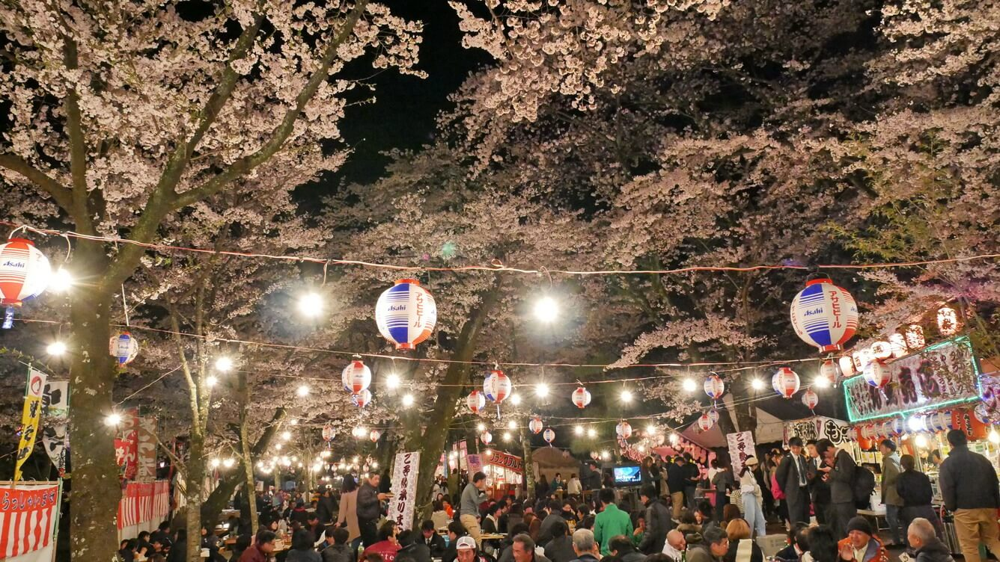
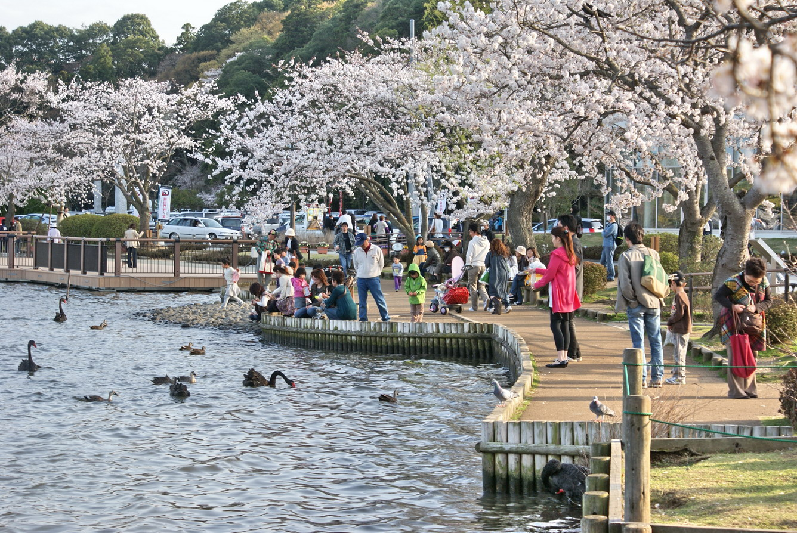

HƯƠNG SẮC IBARAKI
Nhắc đến loài hoa đại diện cho mùa xuân Nhật Bản thì chắc hẳn mọi người đều nghĩ đến “hoa anh đào”!! Tại tỉnh Ibaraki- Nhật Bản có rất nhiều điểm ngắm hoa anh đào đẹp được người Nhật vô cùng yêu thích, tuy nhiên lại chưa được nhiều người Việt Nam biết đến. Mỗi độ xuân về, nơi đây trở thành những điểm ngắm hoa anh đào vô cùng yêu thích.
Điểm đầu tiên phải kể đến là chùa Amabiki Kannon thuộc thành phố Sakuragawa. Amabiki Kannon là một ngôi chùa nằm ở vùng lưng núi mang tín ngưỡng giúp cho mẹ tròn con vuông, trẻ em trưởng thành khỏe mạnh. Bên trong khuôn viên chùa có 3,000 cây anh đào nở rộ và được chiếu sáng vào buổi tối, tạo nên một không gian huyền ảo thu hút du khách. Do có nhiều loại anh đào khác nhau nên có thể ngắm hoa nở trong một thời gian rất dài. Điểm nổi bật làm tăng thêm thích thú cho du khách là bên trong chùa có nuôi thả công nên nếu may mắn có thể chụp được cả công và hoa anh đào trong một bức ảnh!!
Tiếp theo đến công viên Sakurayama thuộc thành phố Mito. Đúng như tên gọi Sakura (anh đào) Yama (núi), bên trong công viên trồng khoảng 370 cây anh đào che lấp một phần mặt núi thu hút rất nhiều du khách. Công viên nằm ngay cạnh đền Hộ Quốc nên du khách có thể vừa kết hợp ngắm hoa vừa thưởng thức một bầu không khí rất “Nhật” bên trong đền!
Điểm nổi bật vào mùa xuân tại công viên đó là bên dưới những cây anh đào rực sáng trong bầu trời đêm là những hàng quán đi động hòa mình vào trong lễ hội hoa anh đào. Du khách đến đây có thể vừa ngắm hoa vừa thưởng thức yến tiệc trong bầu không khí vô cùng náo nhiệt.
Điểm đầu tiên phải kể đến là chùa Amabiki Kannon thuộc thành phố Sakuragawa. Amabiki Kannon là một ngôi chùa nằm ở vùng lưng núi mang tín ngưỡng giúp cho mẹ tròn con vuông, trẻ em trưởng thành khỏe mạnh. Bên trong khuôn viên chùa có 3,000 cây anh đào nở rộ và được chiếu sáng vào buổi tối, tạo nên một không gian huyền ảo thu hút du khách. Do có nhiều loại anh đào khác nhau nên có thể ngắm hoa nở trong một thời gian rất dài. Điểm nổi bật làm tăng thêm thích thú cho du khách là bên trong chùa có nuôi thả công nên nếu may mắn có thể chụp được cả công và hoa anh đào trong một bức ảnh!!
Tiếp theo đến công viên Senba thuộc thành phố Mito. Hồ Senba nằm ở phía Đông Nam của vườn Kairakuen – một trong 3 khu vườn nổi tiếng nhất Nhật Bản. Hồ có chu vi khoảng 3km và có hình bầu, xung quanh hồ là con đường đi bộ phủ kín bởi hàng cây anh đào. Tại đây cho thuê thuyền và xe đạp, là một nơi rất tuyệt vời để nghỉ ngơi thư giãn. Điểm đặc biệt là xung quanh hồ được bao bọc bởi hàng cây anh đào, mỗi khi ánh sáng phản chiếu từ mặt nước lên sẽ tạo nên một cảnh tượng vô cùng lộng lẫy.
TRẢI NGHIỆM 360 ĐỘ
TIN ĐƯỢC QUAN TÂM
Công ty thương mại du lịch TravelAgent
Địa chỉ: Km10, đường Nguyễn Trãi, Hà Nội, Việt Nam
Email: travelagent@gmail.com
SĐT: 19001234